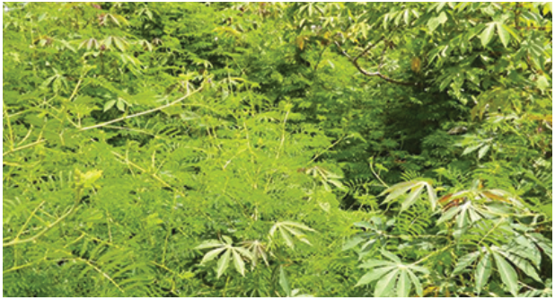
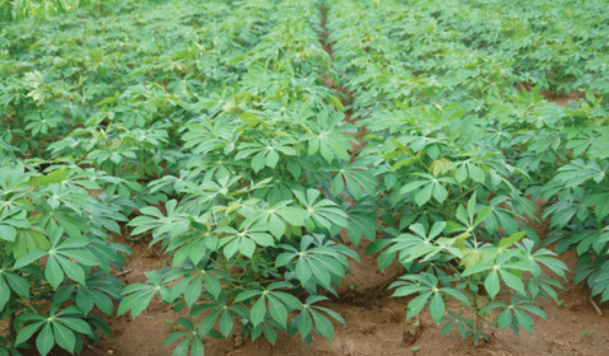

Weeds management
Cassava is affected by annual and perennial weeds (Figure 3.5 (a)). Weeds can
compromise growth and reduce cassava productivity. Although cassava yields
vary with cultivars, season of planting, soil type and fertility, with improved
varieties and under good management practices, they can reach 20–25 tonnes
per hectare. Poor weed management can cause yield loss of 30% to 40%. The
frequency of weeding cassava fields depends on the type, amount, and severity
of the weed problem. It is recommended that the first weed control be performed
3-4 weeks after planting. It should be repeated at 8 and 12 weeks, and the final
weeding should be done between 20 and 24 weeks after planting (Figure 3.5 (b)).

Figure 3.5 (a): Cassava field infested with weeds

Figure 3.5 (b): Clean cassava field
Source: https://cassavamatters.org/cassava-weeds/